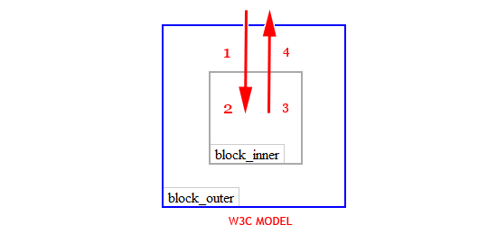

DOM, JQuery
Dive into IT - JavaScript
О себе
- В разработке с 2007 года
- Ведущий разработчик БАРС Груп
- Преподаватель в ВШ ИТиС, КФУ
- Писал AJAX-запросы без JQuery
Мы знаем DOM, JQuery!
Давай что-нибудь поинтереснее!
План
- DOM
- Events и Event Loop
- JQuery best practices
HTML Document
<html>
<head>
<title>Пример</title>
</head>
<body>
Привет, Мир!
</body>
</html>
DOM
DOM — это представление документа в виде дерева тегов, доступное для изменения через JavaScript
DOM
Пробельные символы - тоже узлы DOM-дерева
Навигация в DOM
- document.documentElement - html
- document.body - body
Навигация в DOM
<!DOCTYPE HTML>
<html>
<head>
<script>
alert("Из HEAD: " + document.body); // null
</script>
</head>
<body>
<script>
alert("Из BODY: " + document.body);
</script>
</body>
</html>
Нельзя получить доступ к элементу, которого еще не существует в момент выполнения скрипта.
children & childNodes
- children - только дочерние узлы, соответствующие тегам
- childNodes - все дочерние элементы, включая текстовые
Ссылки вверх и вниз
- firstChild
- lastChild
- parentNode
- previousSibling, nextSibling
getElement* и querySelector*
- getElementById
- getElementsByTagName
- getElementsByName
- getElementsByClassName
- querySelectorAll
- querySelector
- matchesSelector
Внутреннее устройство поисковых методов
document.getElementById(id)
Браузер поддерживает у себя внутреннее соответствие id -> элемент
elem.querySelector(query), elem.querySelectorAll(query)
Просто перебор, никаких сложных структур
elem.getElementsBy*(...)
Результаты поиска getElementsBy* — живые! При изменении документа — изменяется и результат запроса.
Два способа оптимизации
var elems = document.getElementsByTagName('div');
alert( elems[0] );
alert( elems[995] );
alert( elems[500] );
alert( elems.length );
Два способа оптимизации
- Способ Firefox
- Способ WebKit
Добавление и удаление узлов
Методы для создания узлов:
- document.createElement(tag) — создает элемент
- document.createTextNode(value) — создает текстовый узел
- elem.cloneNode(deep) — клонирует элемент, если deep == true, то со всеми потомками.
Вставка и удаление узлов:
- parent.appendChild(elem)
- parent.insertBefore(elem, nextSibling)
- parent.removeChild(elem)
- parent.replaceChild(elem, currentElem)
Events bubbling & events capturing
<div id="block_outer">
<div id="block_inner">
</div>
</div>
<div id="block_outer" onclick="onOuterClick">
<div id="block_inner" onclick="onInnerClick">
</div>
</div>
Bubbling vs Capturing

W3C Model

addEventListener(type, listener, useCapture)
Как прекратить выполнение следующего события?
function myEventHandler(e) {
if (!e) {
window.event.cancelBubble = true; // для IE
} else if (e.stopPropagation) {
e.stopPropagation();
}
}
Event target
$('#level1').addEvent('click', function(e) {
// MSIE "features"
var target = e.target ? e.target : e.srcElement;
if ( $(target).is('#level3') ) {
$('#test').append('#level3 clicked');
}
}, false);
Event loop
JavaScript - однопоточный
Для каждого окна существует всего один поток для выполнения JavaScript-кода.
*Web WorkersEvent Loop
JQuery
jQuery Ready Event
Большинство проектов начинается так:
$("document").ready(function() {
// DOM готов!
// Остальной код здесь.
});
или более короткая версия...
$(function() {
// DOM готов!
// Остальной код здесь.
});
Это нормально, если...
- Известно окружение, в котором будет бежать ваш код
- Вам плевать на производительность
- Вы не используете лучшие практики
Вот так лучше:
// IIFE - Immediately Invoked Function Expression
(function($, window, document) {
// $ теперь в локальном scope
// ждем jQuery ready event на document
$(function() {
// DOM готов!
});
// Остальной код здесь!
}(window.jQuery, window, document));
// Глобальный jQuery объект передается как параметр
DOM manipulation
В большинстве проектов:
// Задаем атрибут title элемента, используя текущее значение
$(".container input#elem").attr("title", $(".container input#elem").text());
// Красим элемент в красный цвет
$(".container input#elem").css("color", "red");
// Заставляем элемент исчезнуть
$(".container input#elem").fadeOut();
Это нормально, если...
- Вам нравится повторять за собой
- Вам плевать на производительность
- Вы не используете лучшие практики
Вот так лучше:
// Задаем атрибут title элемента, используя текущее значение
$("#elem").attr("title", $("#elem").text());
// Красим элемент в красный цвет
$("#elem").css("color", "red");
// Заставляем элемент исчезнуть
$("#elem").fadeOut();
Упрощайте селекторы
Лучший вариант:
// Сохраняем DOM element в переменной
var elem = $("#elem");
// Задаем атрибут title элемента, используя текущее значение
elem.attr("title", elem.text());
// Красим элемент в красный цвет
elem.css("color", "red");
// Заставляем элемент исчезнуть
elem.fadeOut();
Кэшируйте ваши селекторы в перемнных
или более короткая версия...
// Сохраняем DOM element в переменной
var elem = $("#elem");
// Chaining
elem.attr("title", elem.text()).css("color", "red").fadeOut();
Chaining
Еще один пример с DOM
В большинстве проектов:
// Динамическое построение списка на основе массива
var localArr = ["Greg", "Peter", "Kyle", "Danny", "Mark"],
list = $("ul.people");
$.each(localArr, function(index, value) {
list.append("<li id=" + index + ">" + value + "</li>");
});
Это нормально, если...
- Вам нравится в цикле добавлять элементы в DOM
- Вам нравятся медленные web-приложения
- Вы не используете лучшие практики
Лучший вариант:
// Динамическое построение списка на основе массива
var localArr = ["Greg", "Peter", "Kyle", "Danny", "Mark"],
list = $("ul.people"),
dynamicItems = "";
$.each(localArr, function(index, value) {
dynamicItems += "<li id=" + index + ">" + value + "</li>";
});
list.append(dynamicItems);
Добавляйте все за один раз
Event Handling
В большинстве проектов:
$("#longlist li").on("mouseenter", function() {
$(this).text("Жми меня!");
});
$("#longlist li").on("click", function() {
$(this).text("Зачем ты на меня кликнул?!");
});
Это нормально, если...
- Вам нравится использовать много памяти
- У вас мало DOM элементов на странице
- Вы не используете лучшие практики
Вот так лучше:
var listItems = $("#longlist li");
listItems.on({
"mouseenter": function() {
$(this).text("Жми меня!");
},
"click": function() {
$(this).text("Зачем ты на меня кликнул?!");
}
});
DRY - не повторяйте себя
Лучший вариант:
var list = $("#longlist");
list.on("mouseenter", "li", function(){
$(this).text("Жми меня!");
});
list.on("click", "li", function() {
$(this).text("Зачем ты на меня кликнул?!");
});
Event Delegation
AJAX
(не футбольный клуб)
В большинстве проектов:
function getName(personid) {
var dynamicData = {};
dynamicData["id"] = personID;
$.ajax({
url: "getName.php",
type: "get",
data: dynamicData,
success: function(data) {
// Обновляем UI, используя результаты запроса
$(".person-name").text(data.name);
}
});
}
getName("2342342");
Это нормально, если...
- Вам нравится код, который нельзя переиспользовать
- Вам плевать на множественные ajax-запросы
- Вы не используете лучшие практики
Лучший вариант:
function getName(personid) {
var dynamicData = {};
dynamicData["id"] = personID;
return $.ajax({
url: "getName.php",
type: "get",
data: dynamicData
});
}
getName("2342342").done(function(data) {
// Обновляем UI, используя результаты запроса
$(".person-name").text(data.name);
});
Используйте Promises
Ссылки
Домашнее задание
Спасибо за внимание!